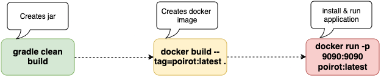

Software Deployment and Software Maintenance
The CI/CD process looks like:

Application has a configuration file application.properties.
At bootstrap step application reads all required parameters from this file.
build.gradle contains tasks responsible for build, code coverage, testing and code formating.
It also contains dependencies of the application.
Version control
We use github as a repository and tooling and git as a version control. It is defacto version control.
The link to the repo.
We work with branches. The main one called main branch. The idea to use branches to make separation of the team
work and reduce risk of untested work. When all required testing is done, we merge it to the main.
Tags & Releases
The entire process presented here
In Poirot project new release is done when milestone is achieved.
When new release is set up, we created new docker image and redeploy the application.
Documentation
Documentation is in md files. We use mkdocs which generates project's documentation.
- Prerequisites
python3 -m venv doc_venv && source doc_venv/bin/activate && pip install mkdocs
- Configuration file
mkdocs.yml
- Building
./scripts/mkdocs_build.sh
- The documentation is hosted on
github.com
mkdocs gh-deploy
Deployment Strategies and Maintenance Techniques
Why Docker?
It helps us to run our application in isolated environment.
It makes management more easy, if we will use k8s we could easlily to scale up, to scale down.
k8s also checks health check of the microservice, and if it fails it will restart it again.
Before docker we can simply run the following command:
gradle clean build
And then
java -jar build/libs/poirot-0.0.1-SNAPSHOT.jar
It is good, but only works locally.
To build docker
docker build --tag=poirot:latest .
To run a docker
docker run -p 9090:9090 poirot:latest
Effectiveness of Strategies Used
References
Yiadh TLIJANI (April, 2024) 8 Deployment Strategies Explained and Compared https://devopsbootcamp.org/8-deployment-strategies-explained-and-compared/
Slaviša Avramović (January 8, 2024) Dockerizing a Spring Boot Application https://www.baeldung.com/dockerizing-spring-boot-application
Github Managing releases in a repository https://docs.github.com/en/repositories/releasing-projects-on-github/managing-releases-in-a-repository
Documentation https://www.mkdocs.org/